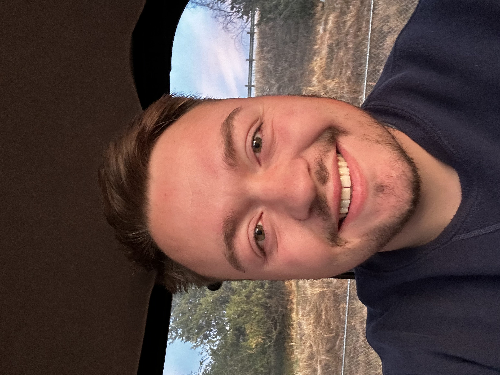

Dylan Rhoads | WDD 130
Hello! My name is Dylan Rhoads, hailing from the picturesque city of Boise, Idaho, where the great outdoors feels like a second home to me. My passion for the natural world knows no bounds, as I find joy in any activity that allows me to soak up the sun, breathe fresh air, and explore the wilderness. Beyond my love for outdoor adventures, I have a fervent appreciation for the art of cooking, particularly Italian cuisine, which I enjoy both making and sharing with others. My dedication to fitness and maintaining a healthy lifestyle is another cornerstone of my life, ensuring that I can tackle any trail or challenge that comes my way. Join me on this journey where flavors, fitness, and the freedom of the outdoors intertwine to paint the canvas of my life. In my kitchen, I focus on the simplicity and heartiness of Italian cooking, transforming basic ingredients into comforting meals. This love for cooking complements my routine of regular workouts, providing a balanced lifestyle that keeps me grounded and ready for any adventure outdoors.